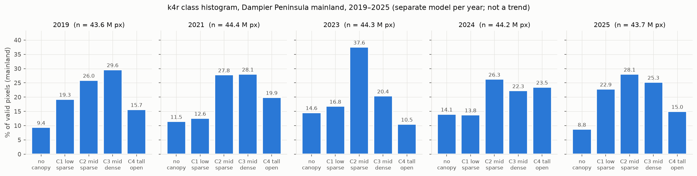
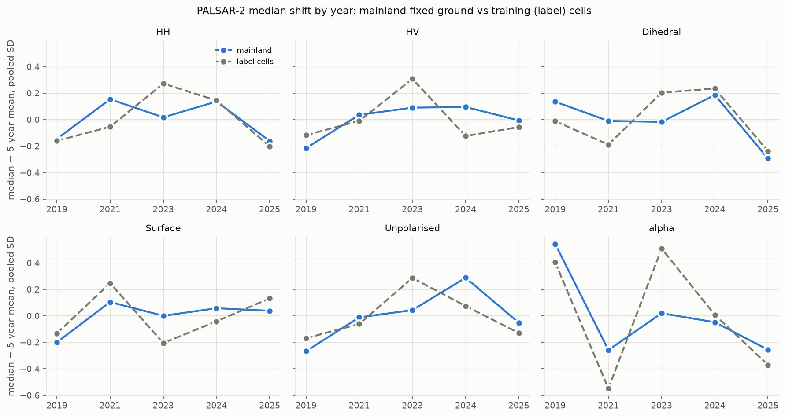
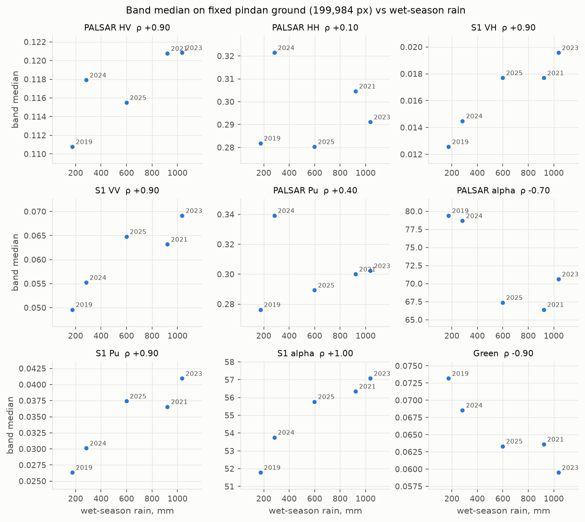
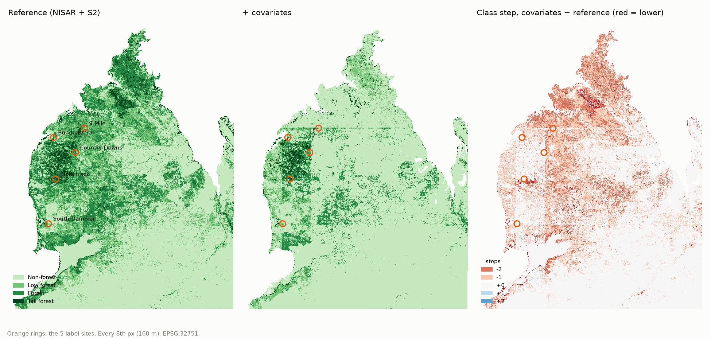
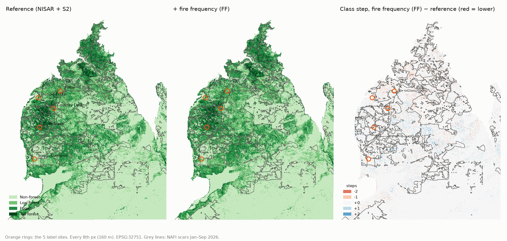
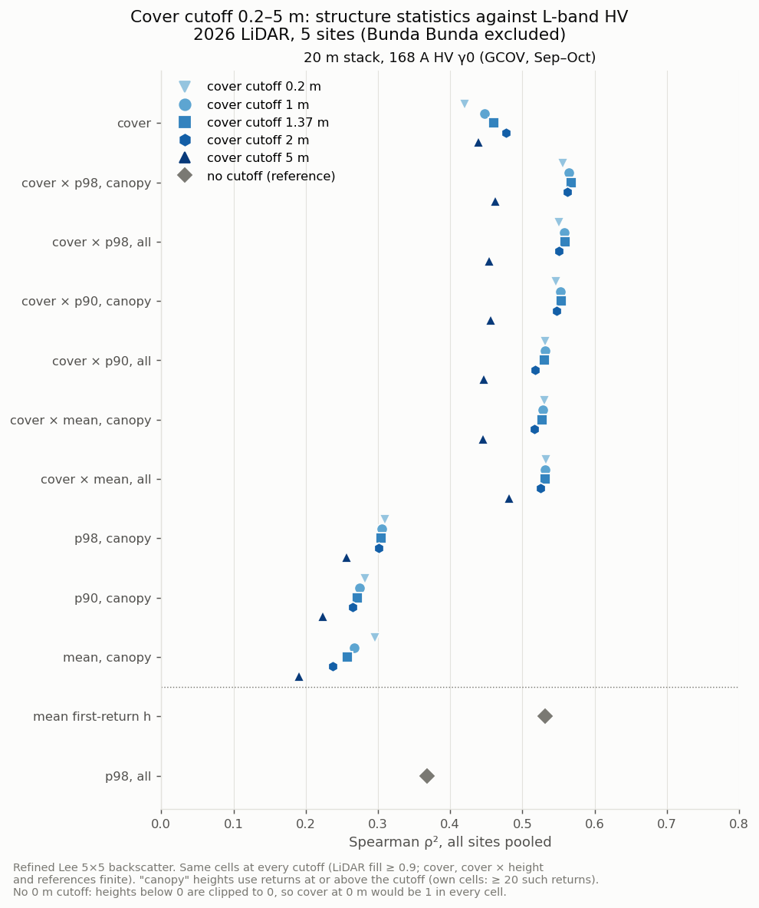

Side roads
Work done on the way. Not part of the 2026 method. One line each, with the link.
Index
| Road | Result in one line | Link |
|---|---|---|
2019–2025 structure classes from PALSAR-2 + S1 + S2 (retro_2d) |
k4r / k3r maps per year, K-fold kappa 0.58–0.62; the 2025 model does not transfer to earlier years (0.29–0.43) | REPORT_master.txt |
| Year signature | acquisition year recoverable from the bands at 80.7 %: confounds every cross-year height statement | REPORT_year_signature.md |
| PALSAR-2 shift, dates, rain | shift mainly a 2019 decomposition anomaly; maps step at mosaic strip seams; current-season rain shifts the bands; DN calibration open | shift, date, wet season, rain |
| Date layer as a feature | identifies site groups, kappa +0.004–0.008, seam steps larger: not recommended | REPORT_date_feature.txt |
| 2019–2025 4-class maps and canopy-height regression; CHM + GEDI hybrid | RF primary; GEDI RH98 ≈ CHM p90, but R² ≈ 0 per shot: trends only over aggregates | CATALOG.md (not in this repo), chm_regression\ (not in this repo) |
| Class vs regression; effective resolution 2025 | paused at Stage R2 | CHECKPOINT.md (not in this repo) |
| Woody thickening (fire history × height increase) | paused 2026-08-24: premise undermined by the year signature | woody_thickening_splice_1\ (not in this repo) |
| Site covariates as features (rain, soil, DEM, northing, easting) | +0.028 OA but act as site keys; map artefacts: not for a product | diagnosis §2 |
| NAFI fire history as a feature | no gain beyond the noise; fire bands are site keys at 250 m | diagnosis §2.8 |
| Structure × NISAR, site offsets, burn age | cover × p98 best single-feature fit (R² 0.56); 2 dB HV site offsets; fire explains part | REPORT_structure_sar.md |
| One-source maps disagree | S2-only vs NISAR-only maps agree on 51 % of the mainland (lift 0.18): open | diagnosis |
| DJI Terra 5 cm filter: unfiltered vs filtered cloud | heights unchanged; cover −0.02; class change Biota 1.5 %, South Dampier 8.1 % | Biota, South Dampier |
| CRS audit | relabelling EPSG:7851 → 32751 withdrawn; reprojection fix pending | crs_audit\CHECKPOINT.md (not in this repo) |
| Natural 2-D structure classes | no natural thresholds; stable k = 2–4 (used in the story, step 3) | REPORT_structure_2d.md |
Figures












More figures: chm_regression\outputs\figures\ (not in this repo),
class_vs_regression\figures\ (not in this repo),
woody_thickening_splice_1\figures\ (not in this repo),
lidar_2026\outputs\vci_by_class\ (not in this repo).